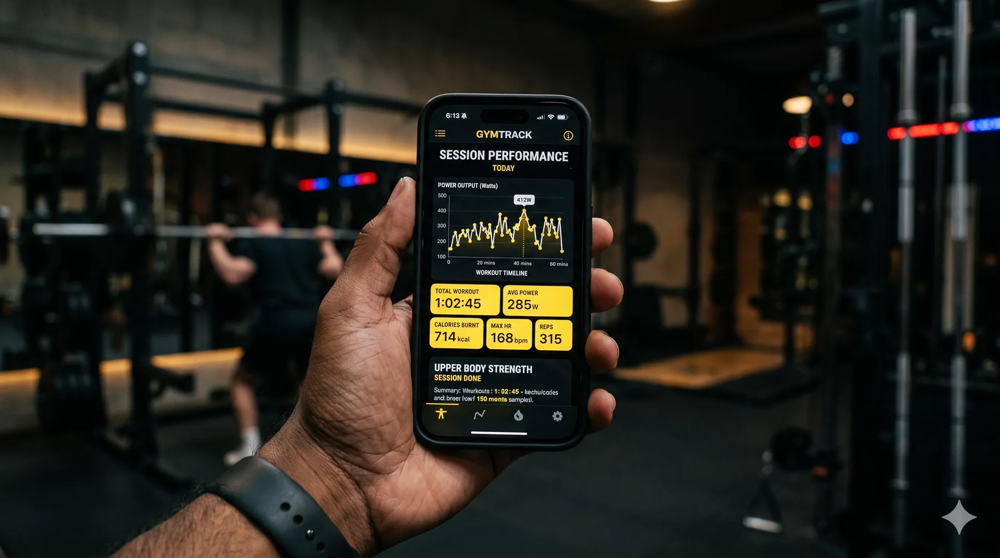
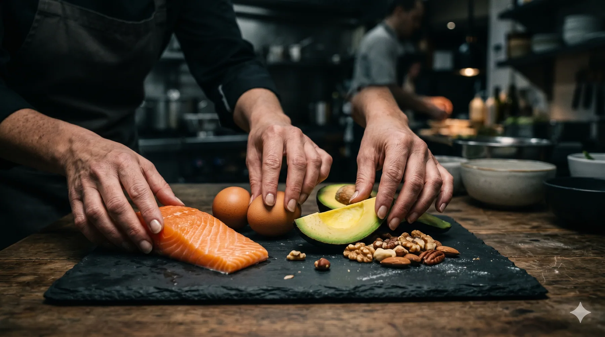
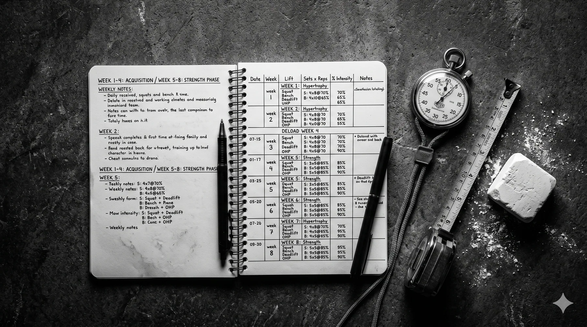
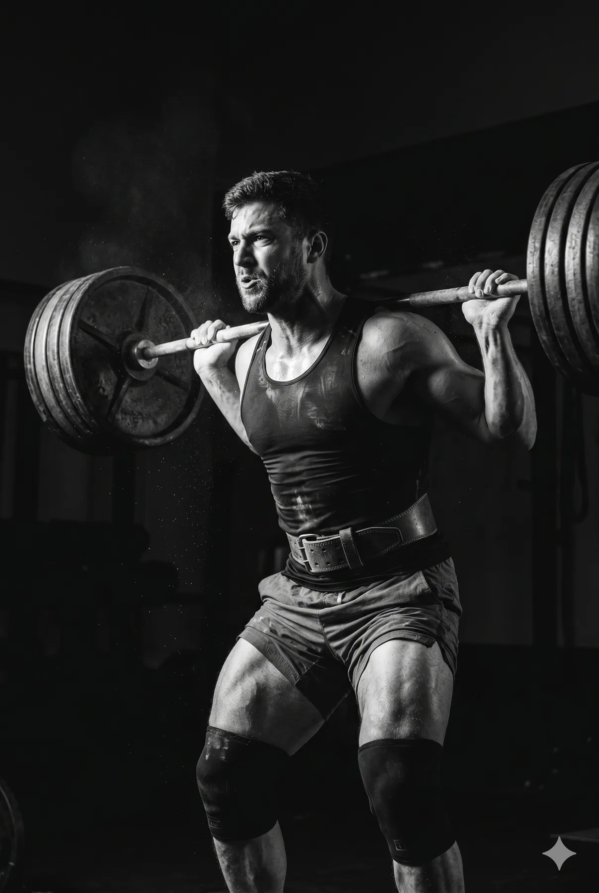
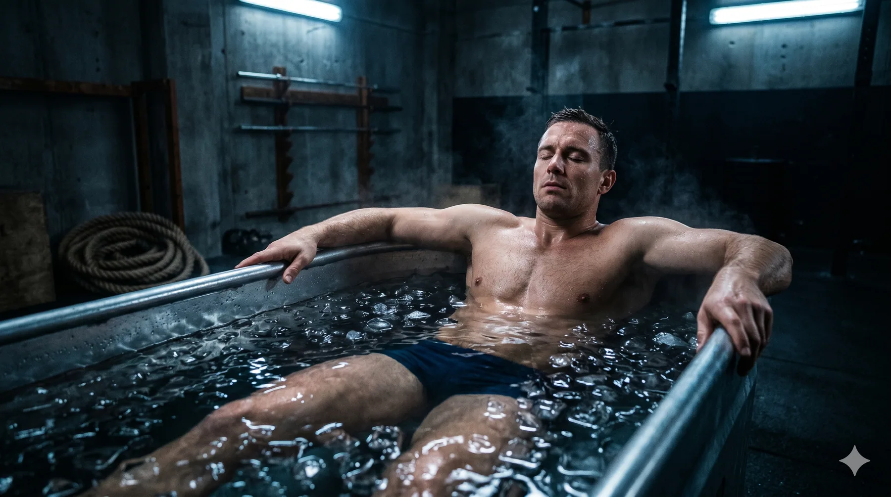

Diagnóstico
O ponto de partida deixa de ser um formulário genérico e passa a mostrar que existe escuta e critério.

Uma página para academias e estúdios que precisam parar de vender acesso a equipamento e começar a vender direção, método e evolução.
Quando todas as academias prometem resultado, a diferença precisa aparecer na estrutura: diagnóstico, plano e acompanhamento. O site organiza essa lógica antes de falar em preço.
O ponto de partida deixa de ser um formulário genérico e passa a mostrar que existe escuta e critério.
O visitante entende que treinamento é uma direção personalizada, não uma sequência aleatória de exercícios.
Acompanhamento e ajuste entram como parte central da proposta, sem inventar números ou resultados.

A direção visual segura a energia da categoria, enquanto a hierarquia conduz a leitura. Impacto e clareza trabalham juntos.
O visitante reconhece rapidamente a proposta e decide se aquele método combina com ele.
Etapas concretas substituem promessas genéricas e deixam a conversa mais madura.
Em um projeto real, avaliação, aula experimental ou WhatsApp entram conectados à operação correta.
Os ativos abaixo são conceituais. Em um site de cliente, a direção parte do espaço, das pessoas e do método reais — sem rosto genérico ou prova fabricada.



FORJA não é uma academia real. É uma demonstração de como a VORO transforma posicionamento, método e direção visual em uma página feita para gerar conversas.